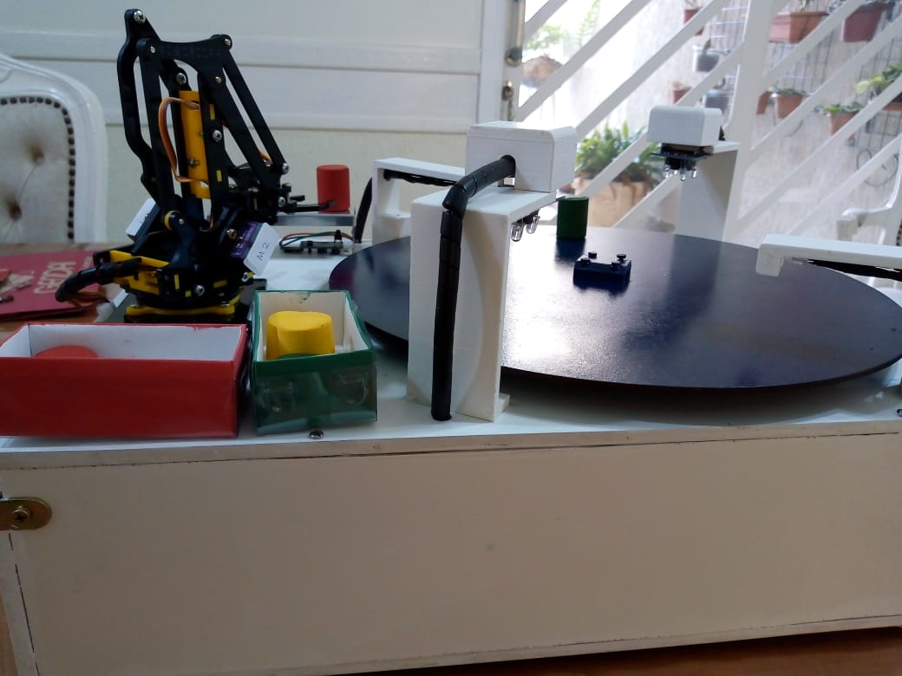

A maquete é uma proposta que representará uma Célula de Usinagem Autônoma com interface web. Está Célula contém duas estações de usinagem de peças e duas estações de inspeção de qualidade das mesmas, uma plataforma giratória e um braço robótico. Além de um roteador externo a maquete, usado para acessar a página web

Minha atuação na Maquete Indústria 4.0:
Neste projeto multidisciplinar, atuei como projetista eletrônico, sendo o principal responsável pela definição e elaboração do diagrama elétrico para o desenvolvimento da prototipagem da maquete. Desenvolvi o circuito com foco em um sistema modular, visando facilitar futuras manutenções e expansões, além de garantir a integração eficiente com o restante da arquitetura do projeto.
Trabalhei em constante alinhamento com a equipe de mecânica, assegurando a compatibilidade entre os componentes eletrônicos e a estrutura física da maquete. Também considerei os recursos que estariam disponíveis para a equipe de desenvolvimento embarcado, especialmente no uso do Raspberry Pi, otimizando a distribuição de GPIOs, alimentação e comunicação entre os módulos.
Além disso, contribuí para a elaboração de documentação técnica e participei ativamente nos problemas que apareceram na protipação, propondo soluções para desafios de integração entre hardware e software. Durante os mais de 6 meses de desenvolvimento, colaboramos intensamente para garantir que todas as funcionalidades planejadas fossem implementadas com sucesso. Ao final, realizamos uma série de testes de validação, obtendo resultados positivos em termos de desempenho, estabilidade e usabilidade do sistema.